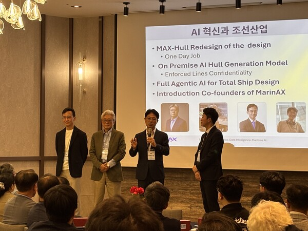

AI로 선형설계의 시간을 줄이다, MAX-Hull 공개
부산대 교원창업기업 마린에이엑스가 선형 생성, 성능 예측, CFD 해석을 하나로 잇는 AI 기반 설계 플랫폼을 선보였습니다.
MAX-Hull brings AI into hull-form design
MarinAX, a Pusan National University faculty startup, unveiled a platform that connects hull generation, performance prediction and CFD analysis.

마린에이엑스가 9월 18일 부산 해운대센텀호텔에서 AI 기반 선형설계 플랫폼 ‘MAX-Hull’을 공개했습니다. 제품 발표회에서는 설계부터 검증까지 이어지는 실제 작업 흐름을 시연했습니다.
하나의 흐름으로 잇는 선박설계
MAX-Hull은 선박의 주요 제원과 설계 조건을 입력하면 3차원 선체 형상과 2차원 선도를 생성합니다. 여러 설계안을 빠르게 비교하고, 생성한 선형을 다음 설계에 활용할 데이터로 축적할 수 있습니다.
플랫폼은 약 4천 척의 선형 데이터와 1만 2천 건의 CFD 유동해석 데이터를 AI 학습과 설계에 활용합니다. AI 유동 예측으로 선체 압력 분포와 유동 특성을 먼저 확인한 뒤, 더 정밀한 검증이 필요한 경우 CFD 해석으로 연결합니다.
설계자의 판단을 돕는 AI
제품 발표회에서는 연비향상 부가물(ESD)의 위치와 형상을 생성·비교하고, CFD 전처리와 후처리, 성능보고서 작성까지 이어지는 기능도 소개됐습니다. 자연어로 요구사항을 입력하면 필요한 설계 도구를 순서대로 실행하는 ‘Agent-MAX’도 공개됐습니다.
마린에이엑스는 기존 조선소의 선형설계 업무가 한 달 이상 걸리는 경우, 이를 하루 수준으로 줄이는 것을 목표로 합니다. 앞으로 클라우드형, 사내 구축형, 기업별 맞춤형 서비스로 공급을 확대하고 조선·해양 분야에 특화한 AI를 발전시킬 계획입니다.
이 글은 더쎈뉴스 이승렬 기자의 2026년 9월 21일 보도를 바탕으로 마린에이엑스가 재구성했습니다.
MarinAX unveiled MAX-Hull at Haeundae Centum Hotel in Busan on September 18. The launch demonstrated a connected workflow from initial hull design to engineering validation.
One connected design workflow
Designers enter a vessel's principal dimensions and design conditions, and MAX-Hull generates 3D hull geometry and 2D lines. They can compare alternatives quickly, while each new hull becomes data for future design work.
According to the report, the platform draws on approximately 4,000 hull forms and 12,000 CFD flow-analysis cases. AI flow prediction offers an early view of pressure distribution and flow characteristics; designs requiring closer validation can then move into CFD analysis.
AI that supports designers
The launch also demonstrated the generation and comparison of energy-saving devices, CFD pre- and post-processing, and automated performance reports. Agent-MAX turns natural-language design requests into a sequence of engineering tasks and tool calls.
MarinAX aims to reduce hull-form design work that can take more than a month at shipyards to around one day. The company plans to offer cloud, on-premises and tailored deployments as it develops AI for the shipbuilding and offshore industries.
This story was adapted by MarinAX from The CEN News report by Lee Seung-ryeol, published September 21, 2026.